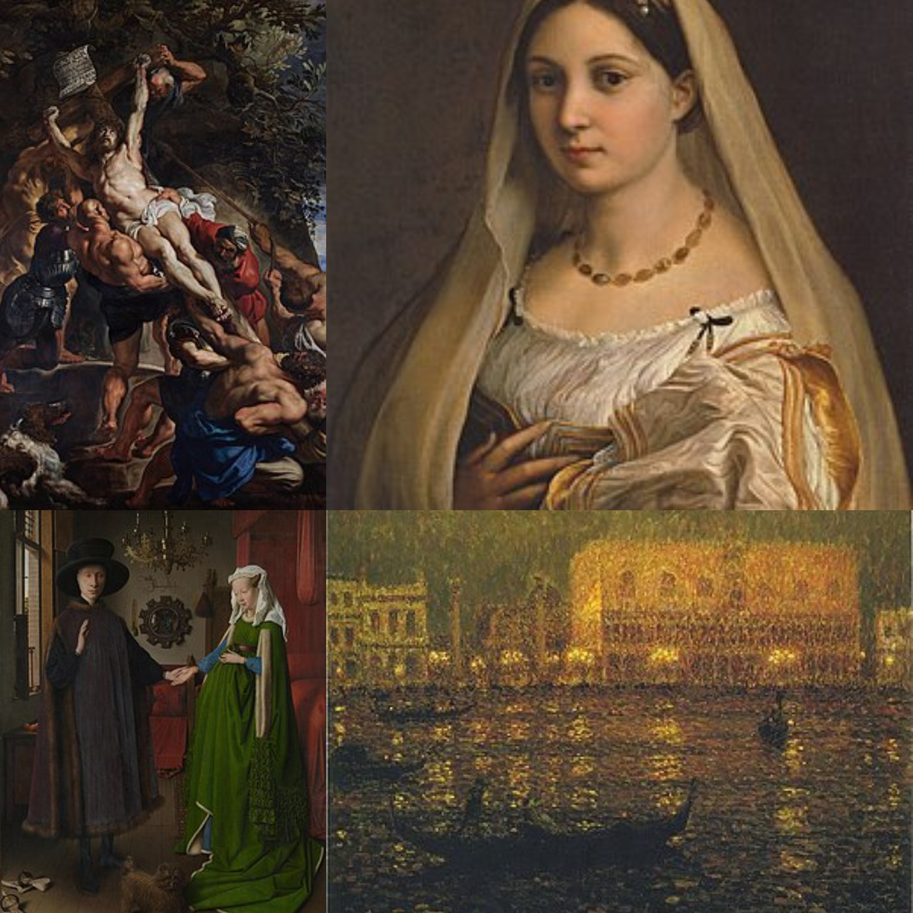

Art Techniques
Here are some Techniques you can use when doing a artwork. Tap on a technique to learn more, see examples, and watch tutorials.

Pencil Shading

Painting Techniques

Colored Pencil Techniques
Pencil Shading
Shading is adding dark and light areas to a drawing to create the look of form, space, and light. For example, when drawing an apple, you would use shading to make one side darker than the other, giving the apple a rounded, three-dimensional appearance.
Let’s begin exploring shading techniques.
Blending

Blending is probably the most commonly used pencil shading technique. This technique focuses more on concealing the application of marks instead of making specific marks. It can be done with any medium but often works best with pencil and charcoal drawings.
The goal of blending is to create a smooth gradation from one tone to another rather than a sharp transition. This can be achieved by applying the media seamlessly or rubbing it with a finger or smudging tool.
When blending, it’s important to build up the tone gradually and use a light touch. Blending too aggressively can result in a muddy or blurry effect.
Hatching

Hatching is done by drawing a series of closely spaced parallel lines. These lines can be drawn at any angle. However, the direction should be uniform throughout the area being shaded.
The closer together the lines are, the darker the shading will be. Varying the line width and spacing can create different effects. Hatching can also be used to create the illusion of texture, like the fur of an animal.
Hatching can be used alone or in combination with other shading techniques, such as cross-hatching and stippling.
Cross-Hatching

Cross-hatching is a shading technique that uses two sets of parallel lines crossed at an angle. This creates a mesh-like effect that can create different shading effects.
Cross-hatching is done by drawing one set of parallel lines in one direction and then drawing another set of parallel lines over the first set in a perpendicular direction.
The closer-spaced lines will create a darker shading, while further-spaced lines will create a lighter shading. By playing with the spacing and angle of the lines, you can create shading that ranges from subtle to dramatic.
Cross-hatching can be done alone or with other shading techniques to create even more complex and interesting effects.
Contour Hatching

This technique is slightly similar to hatching. However, instead of parallel lines, contour hatching uses curved lines that follow the object’s shaded contours (or outlines). This creates a more natural look and can create different effects depending on the line width, spacing, and direction.
To contour hatch, draw a contour line of the object you want to shade. Then, draw a series of curved contour lines within that contour, following its shape.
This technique can also be combined with hatching and cross-hatching to create more complex effects.
Woven Hatching

Woven hatching is done by drawing a set of parallel lines in one direction. Next, a second set of parallel lines is drawn next to the first set in a perpendicular or nearly perpendicular direction. This creates a woven effect that can create different illusions and shading effects.
Cross-hatching can be added to woven hatching to add density in darker areas.
Woven hatching can create different effects depending on the spacing between the lines and the sets of lines. Experiment with different spacing to see what effects you can create.
Stippling

Stippling is a shading technique that uses small dots to create shadows and highlights. The dots can be any size, but they are usually uniform in size throughout the area being shaded.
The number of dots used and their placement can be varied to create different effects. The closer together the dots are, the darker the shading will be.
Stippling requires patience as it can be time-consuming, but the results can be worth it.
Scribbling

Scribbling is a shading technique that uses random, unplanned strokes to produce shadows and highlights. It is a quick way to add shading to an image.
This shading technique also creates a textured look and is often used on artworks depicting trees or hair.
You can control the effects by increasing or decreasing the density of the scribbles. The closely packed strokes or scribbles will create a darker shading, while further apart strokes will create a lighter shading.
Suggested YouTube Tutorial:

Top 5 Shading Techniques for Begginers
Watch on YouTube
Painting Techniques
Painting techniques refer to the various methods artists use to apply paint to a surface to achieve different visual effects, textures, and styles. Below are some of the most well-known and widely used painting techniques throughout art history.
Oil Painting
Oil painting is a traditional art form where pigments are mixed with a drying oil (like linseed, walnut, or poppy seed) to create a paint that can be applied to a canvas, wood panel, or copper. This technique allows for a wide range of effects, including rich colors, layering, and textural variations.
Acrylic Painting

Acrylic painting is a form of art created using acrylic paints, which are fast-drying and versatile. These paints are made of pigment suspended in an acrylic polymer emulsion and can be used on a variety of surfaces. Acrylics offer a wide range of techniques, allowing for both detailed and textured work, and can mimic the look of watercolors, oil paints, or gouache.
Watercolor Painting

Watercolor painting is a water-based painting technique where pigments are suspended in a water solution and applied to a surface, typically paper. It's prized for its transparent colors and ability to create washes and soft effects. The process involves mixing water and pigment, often with a brush, to achieve different shades and tones.
Gouache

GGouache is an opaque water-based paint that is similar to watercolor but offers a richer, more vibrant color and a matte finish. It is known for its ability to create bold, saturated colors and its ease of use, including the ability to paint light over dark and dark over light. Gouache is also known for its quick drying time, allowing for easy layering and quick fixes.
Tempera

Tempera painting is a technique where pigments are mixed with a water-soluble binder, most commonly egg yolk (hence the name "egg tempera"). It's a permanent, fast-drying medium that produces opaque, vibrant colors, often applied to wood, paper, or other absorbent surfaces.
Impasto

Impasto painting is a technique where paint is applied thickly to a surface, creating a textural and three-dimensional effect. The brushstrokes or palette knife marks are visible, and the paint appears to stand out from the canvas. This technique is commonly used in oil paintings, but can also be achieved with acrylics and sometimes with watercolors.
Glazing

Glazing in painting is a technique where thin, transparent or semi-transparent layers of paint are applied over a dried underpainting, usually to create luminous effects and enhance the colors below. This method allows light to pass through the glazes and reflect off the underlying layers, creating a depth and richness that can't be achieved through direct color mixing.
Grisaille

Grisaille painting is a technique where artists use variations of a single color, typically shades of gray, to create an image. It's often used as an underpainting, the first layer of a painting that will later be glazed with color, to establish the form and values before color is introduced.
Dry Brush

Dry brushing is a painting technique where paint is applied with a brush that is relatively dry, leaving a textured and often worn finish. It's commonly used to create highlights, emphasize textures, or achieve a rustic look. The technique involves using a brush with a small amount of paint, applying it with a light touch, and focusing on raised areas or edges to create a subtle highlighting effect.
Scumbling

Scumbling in painting is a technique where a thin, opaque layer of paint is applied irregularly over a dry underpainting, creating a broken, textured effect and allowing the underlying color to peek through. It's a way to add visual interest, depth, and a sense of motion to a painting.
Suggested YouTube Tutorial:

Ultimate Beginners Guide to Start Painting
Watch on YouTube

Acrylic Painting for Beginners: Techniques & Supplies
Watch on YouTube

The ultimate WATERCOLOUR TUTORIAL | For beginners | Drawlikeasir
Watch on YouTube
Colored Pencil Techniques
Colored pencil techniques refer to the different ways of applying and blending colored pencils to achieve various visual effects, textures, and depths in artwork. Below are some well-known colored pencil techniques used by artists.
Layering

Layering involves building up multiple layers of colored pencil to achieve smooth transitions, blending, and rich color. The technique is used to create depth and soft gradients by gradually layering different shades on top of one another.
Burnishing

Burnishing is the process of applying heavy pressure with a lighter color pencil or a colorless blender to blend colors into a smooth, polished finish. It creates a glossy, waxy effect that softens pencil strokes and enhances color saturation.
Blending

Blending is the act of mixing different colored pencils or hues together to create smooth transitions and seamless color gradients. This technique can be done using blending stumps, solvents, or simply layering pencil strokes over each other.
Scumbling

Scumbling involves using circular, overlapping motions with the pencil to create texture or soft gradients. This technique is particularly effective for building up textures like fur, clouds, or fabric.
Hatching & Cross-Hatching

Hatching and cross-hatching are drawing techniques where parallel lines (hatching) or intersecting lines (cross-hatching) are used to create shading and texture. These methods allow for the creation of light and shadow by varying line density.
Solvent Blending

Solvent blending uses a solvent like rubbing alcohol or baby oil to dissolve and smooth the pigment, giving a watercolor-like effect. It helps achieve a smooth, painterly finish while enhancing the depth and vibrancy of the colors.
Impressed Line (Indenting)

Impressed line involves using a tool (such as a stylus or embossing tool) to make impressions or indentations into the paper before applying color. This technique allows for highlights and fine details to appear as white or lighter areas in the final artwork.
Highlighting & Lifting

Highlighting involves using an eraser or a white pencil to lift color off the paper and create areas of light. This technique is often used for highlighting bright spots or creating reflective surfaces like glass or metal.
Suggested YouTube Tutorial:

Colored Pencil Techniques for Beginners
Watch on YouTube

Mastering Colored Pencils: Tips & Tricks
Watch on YouTube

Colored Pencil Drawing Techniques
Watch on YouTube